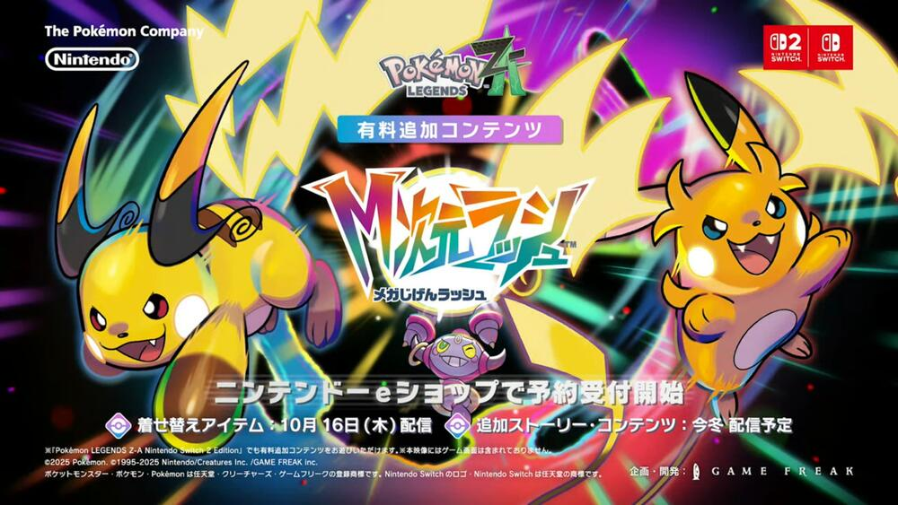
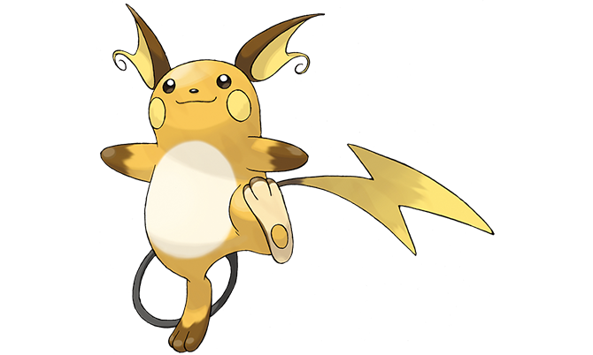
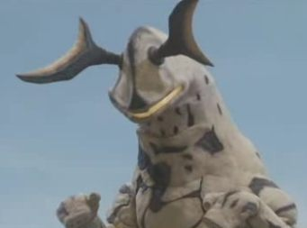
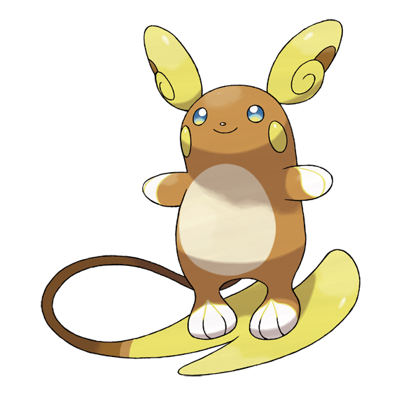
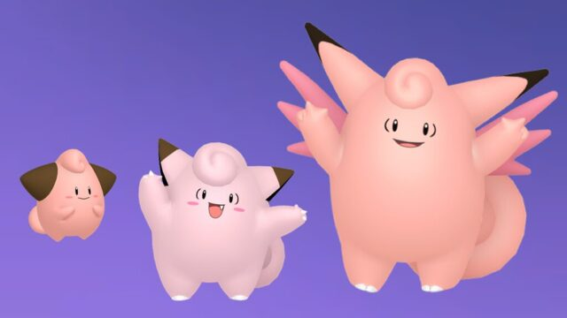

こんにちは、ザクザク食感です。
書きたいことはあってもアウトプットする気力がない日々です。
ちょっと気が向いたのでこのブログのOGP画像を設定したり、Google検索でこのブログがヒットするようにしました。ついでに最近のメモ書きをまとめます。
ライチュウのモチーフは悪魔なんじゃないか
この前のニンテンドーダイレクトで、新作のポケモンでメガライチュウが登場することが発表された。

左がメガライチュウX、右がメガライチュウYで、それぞれXとYの形を象ったいいデザインだと思う。
このデザインを見て、なんか悪魔っぽい？と思った。
そう考えて改めてライチュウを見てみると、元から悪魔っぽいのかもしれないと感じた。

耳の形とか長いしっぽからそんな感じのニュアンスを感じる。
検索してみると一人だけこれについて言及している人がいて、その人はライチュウの耳はエレキングなんじゃないかと言っていた。

たしかに！
同じ電気属性だし、そもそもポケモンはウルトラセブンのカプセル怪獣が元ネタになっていて、それ以外にもウルトラマンを参考にした要素が多いと聞いたことがある。（例えばダイマックスは3ターンだけ巨大化する→3分間だけ戦えるウルトラマンと似ているみたいな）
そこから派生して悪魔っぽいデザインにしていったのかと思った。

悪魔モチーフだとすると説明がつくことがもう一つある。
それがアローラライチュウ（アラーラ地方でのライチュウの姿）なのだが、

耳が天使みたいになってる！
今までしっぽでサーフィンをする部分にしか着目していなかったので、これに気づいたときなるほど！！！と思った。
あとライチュウの進化前のピカチュウはアニメのメインポケモンとして据えられているが、漫画ではピッピがメインポケモンになっている。
そのピッピの進化系であるピクシーを見てみると、天使みたいなニュアンスがあるかも？と感じた。

そう考えるとライチュウ系統とピクシー系統は対比になっていて、
トキワの森でしか捕まえられない↔おつきみ山でしか捕まえられない、
ピカチュウに雷の石を与えるとライチュウに進化する↔ピッピに月の石を与えるとピクシーに進化する、
べビィポケモンのピィ↔べビィポケモンのピチュー
みたいに対になっているので、デザイン的にそうなるのもわかるなーと思った。
ライチュウが悪魔モチーフだと推測すると、悪魔がモチーフのピカチュウを作品のメインに据えるって結構思い切ってないか？と思った。おもしろ
基本情報技術者試験を受けた
9月に半ばに基本情報の資格試験を受けた。
僕は勉強が大嫌いなので、資格なんて、まして7500円も受験料を払って試験を受けようだなんて今まででは考えられない。だが、とにかく資格を取らなければならない。
今の会社に入ってもう3年目になるが、給料は額面でも2万円しか上がっておらず、税金等で引かれて手取りは6000円くらいしか上がらなかった。手取り20万6000円で家賃補助もない(しかも家賃が8万円😢)のでとにかくお金がない！！！
このままこの会社にいても昇給の見込みはないので、もっと条件がいい会社に転職する形で収入を上げたい。そのためにはできる限りスペックを盛る必要があり、しぶしぶ資格取得に励んでいる。
僕に適職なんてないが、エンジニアの道に進んできてしまったので、エンジニアとしての最低限の知識を担保する基本情報をまず取ることにした。
すでに合格した友人が｢過去問3年分解いとけば間違いない｣と言っていたので、とりあえずネットに上がっている過去問3年分をスラスラ答えられるようになるまで解いた。
基本情報は知識問題を4択で答える科目Aと、疑似言語を使ったプログラミング的な思考力を試す科目Bに分かれている。科目Bは当日にどれだけ頭が回るかでしか解きようがなく、過去問を解いてもあまり意味がなさそうなので、知識系の問題が多い科目Aの過去問を解いた。
解いたと言っても4択を覚えるだけなので体系的な理解はできていない。だが友人の助言通り過去問が役に立つと信じて叩き込んだ。暗記なんてもう3年ぐらいやっていなかったので、少し懐かしい気持ちになった。それと同時に耐え難いつまらなさと不快感が込み上げてきて、やっぱ勉強嫌い！と思った。
試験当日に過去問を解き直したら正答率が9割だった。
まあやれることはやっただろうと思って試験会場に向かった。途中でピンク魔剤とラムネ味のハイチュウを買った。魔剤を2本買ったら50円引きだったので2本買った。
魔剤を1本飲んで科目Aの試験を受けた。あれだけ対策したから余裕だろうと思っていたら、何問解いても見覚えのない問題しか出てこない。なぜだ……！？謀ったな友人！と思いながら最良と思われる選択肢を必死で選んだ。
結局過去問が役に立った問題は2問だけで、それ以外は見たことのない問題だった。試験時間を30分ぐらい残して見直しが完了してしまい、今できうる最善の択は通したものの確証がないまま休憩時間に入った。
休憩は10分しか与えられていないので、すぐにロッカーに向かい、残していた2本目の魔剤とラムネを持ってトイレに向かった。他に居場所がないのでトイレに向かわざるを得なかった。
誰もいないことを確認して魔剤を一気飲みし、ラムネを全部食べた。次に受ける科目Bはほとんど対策していないので、これを摂取すれば頭が回って解けるようになると自己暗示をかけるように口に詰め込んだ。
モシャモシャとラムネを食べていると、試験会場の受付のお兄さんが入ってきた！僕をガン見した後に何も見なかったかのようにトイレを始めた。
僕はラムネを食べる手を止めなかった。人が何かむさぼっている横でトイレをするってどういう感覚なんだろう というか僕の衛生観念がやばくないか？とかいろいろ考えたが、休み時間は限られているのでなりふり構っていられなかった。
ラムネをなんとか飲み込んだ後、いや僕はトイレしに来ましたけど？みたいな素振りをしてお兄さんが去るのを待ってトイレを出た。
事前に勉強をしていないので他にすることもなく、早めに休憩を切り上げて会場に戻った。入室の手続きをする人がさっきトイレにいたお兄さんで気まずかった。
科目Bの試験が始まった。
最初の2問くらいは算数の文章題みたいな感じなので解けたが、それ以降自信を持ってこれが答えだ！と言える問題がない……
アルゴリズム通りに計算したりアルゴリズムの意図を汲んで空欄の処理を埋める問題がほとんどなのだが、マジで自分の脳を関数電卓にしてひたすら演算をするしかない。御手洗 暉か？
そして尿意がやばい。魔剤をがぶ飲みしたらそりゃそうなる。集中力が削がれるのでさっとトイレに行きたいが、試験官を呼んだらさっきのお兄さんが来るだろうからめっちゃ嫌だった。
でもそんなこと言ってる場合じゃないから仕方なくトイレに行った……案の定さっきのお兄さんが対応してくれた。
30分を残して一通り解き終わったが、自信を持って合ってると言える問題が5問ぐらいしかなくて、この時点で失うであろう受験料7500円のことで頭が一杯だった。
休日に3万する服を買ったことが頭をよぎった。僕は今月で破産するのか……？
諦めるわけにはいかない。なんとなくで解いた問題の検算を全力でやった。
全30問中の10問目ぐらいまで検算をしていると急に画面が切り替わって、でかい数字が表示された。え……？
画面には
科目A 725/1000
科目B 640/1000
と表示されていた。試験の結果だ。
両方が6割を超えていれば合格なので受かったことになる。
本当に自信がなかったのであまり状況を受け入れられないまま部屋を出て、お兄さんにお疲れさまと言われ施設を出た。
え……受かったんだよな……？マジ……？
落ち着かないのでルミネ7階まで上って1階に下りたりしていたが、こんなことに意味はないと思い直し、なんか食べて帰るかと思ったが行きたい場所もなく、もやっとしたまま帰った。
で、今に至る。結果が正式に出るまでには時間がかかるらしく、まだ本当に受かったのかわかっていない。
試験に受かった場合だけ受験料の7500円を会社に申請すれば戻ってくるので、早く結果が出ることを待っている。
これから基本情報を受けるみなさんは、とりあえず過去問を解くことは推奨するが、あてにならないことが多いので過信しすぎてもいけない。日頃から情報リテラシーに気を付けて生活をする＋バックエンド系のプログラミングをやるくらいしか対策法はない気がします……
柔軟性
会社でバグの調査依頼を受けたチームメンバーがその成果を報告していたが、すごく的外れな報告をしていた。
障害の原因調査をしなければいけないのに、その障害の報告をしているような感じで、核心の部分に触れていなかった。明らかにサボりだ。
それについて指摘されると、使っているツールの使い方の説明をそっちがしていないのが問題だ！みたいに逆ギレしていて、なんだこいつ～と思った。
調査を依頼した人がたじろいでいたので、「ここに資料が用意されてるんですけど、なんでちゃんと読んでないんですか？」みたいなことを僕が指摘したら、場の空気が完全に終わった。しまった……と思った。
僕は何か答えを出す議論のときに、主張に自分なりに筋を通して、それを相手に説明したり例として挙げることで結論を導こうとする。
これに間違いはないと思うが、ここに相手の事情を考慮する柔軟性がないことがよくないと思った。
例えば今回の件なら、相手が忙しいとか、初学者だからドキュメントを理解しきれないみたいな背景を想像して相手の気持ちになる配慮が欠けていた。
そして、僕のスタンスとして人にされて嫌なことはしないことと、自分がされて嬉しいことは人にもすることがあるが、これが柔軟性を失うことにも繋がっている気がする。
例えば、誰かから相談を受けるとき、僕は相手なりの答えが聞きたいと思って相談することが多いから、誰かから相談を受けたときも問題の解決に近づく答えを出そうとする。
ただ、人によっては悩みの解決がしたいというよりはただ愚痴って発散をしたいだけなこともあると思う。
僕にはそれを読み取って柔軟に対応する力がない気がする。
僕が鬱病（双極性障害）でダメになっていたとき、いろんな不安や上手くいかなかったことを相談したら、病院に行ったら？と言われたことがあった。
この助言に背中を押されて、僕は病院に行って薬を処方され、精神が落ち着いてものすごく生きやすくなった。間違いなくそれがきっかけで人生が変わっていて、感謝してもしきれない。
この経験があるので、僕がもし同じような相談を誰かに受けたときも「病院に行ったら？」と言ってしまいそうな気がするが、きっとそれは正しくない。
本人が鬱を治したいと思っていても、精神科に行くというハードルはすごく高い。病気だと認めたくなかったり、精神病患者呼ばわりされたくないという人にとっては、そのアドバイスを受けることで凹んでしまうことがあるかもしれない。
僕は今まで散々悩み相談をその人にしていて、鬱の程度が病的になってきていることを察知してアドバイスをくれたのだと思う。そういう風に相手に合わせて柔軟に発言を変えていくことが大切なんだと思う。
そういうことを振り返って、正論が必ずしも正しいわけではないが、ただ僕には正論が合っているだけなんだなと思った。
僕もその柔軟性がほしい！どうすれば適材適所の発言ができるんだろう……最近それにすごく悩んでいる。もう人を傷つけたくない……自分を通して相手のことを思っているんだ！では済まされない。
それでは、さようなら。